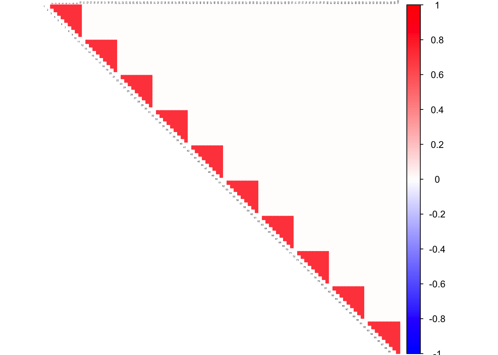
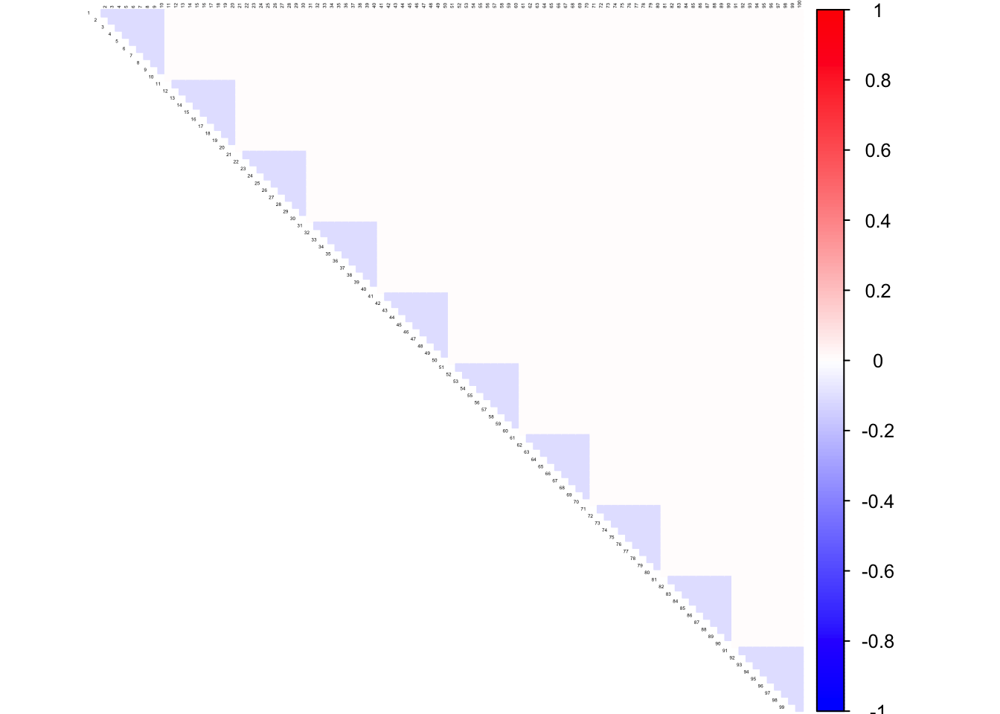
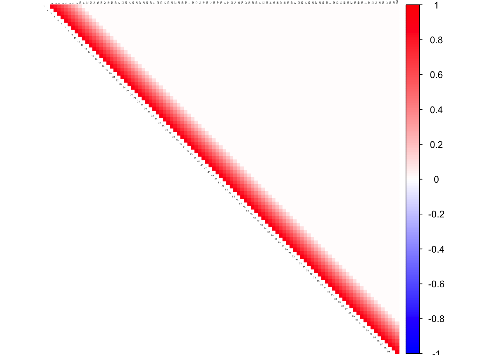
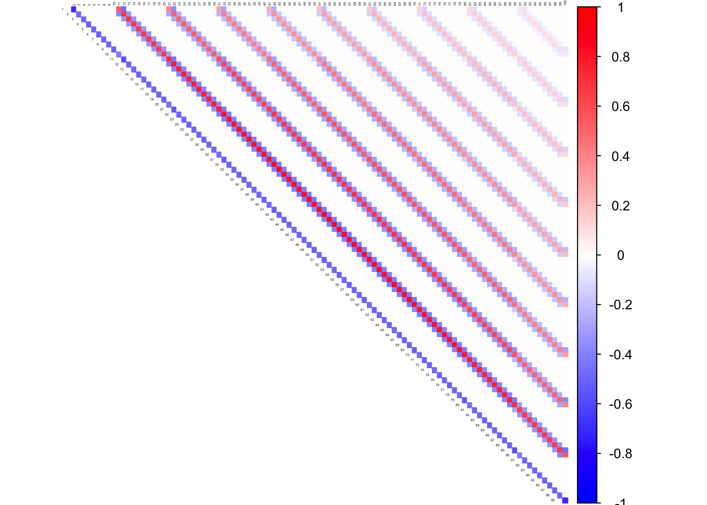
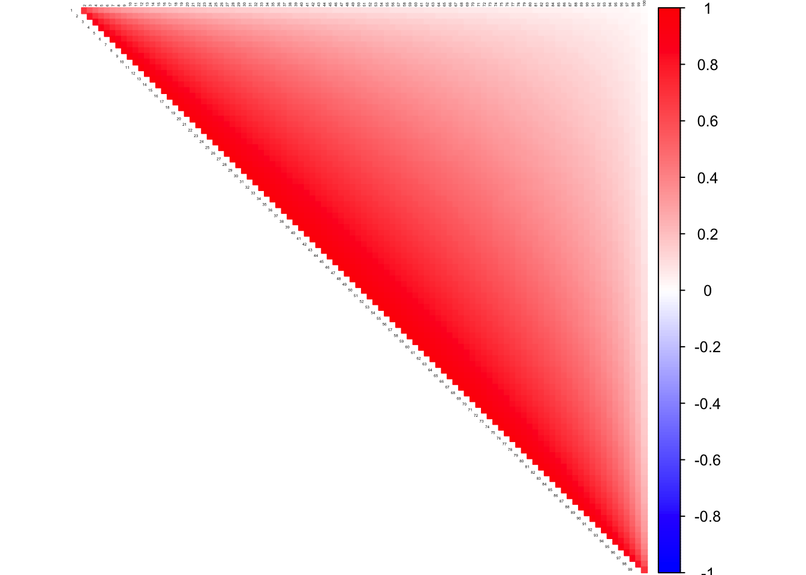
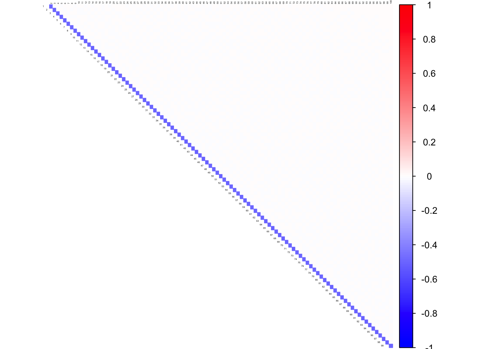

In this script, we plot the correlation and precision matrices corresponding to which, we have run the simulations.
library(ggplot2)
library(corrplot)## corrplot 0.84 loadedlibrary(Matrix)
library(gridExtra)
library(corpcor)col2 <- c("blue", "white", "red")
block <- 10
mat <- 0.3*diag(1,block) + 0.7*rep(1,block) %*% t(rep(1, block))
Sigma <- bdiag(mat, mat, mat, mat, mat, mat, mat, mat, mat, mat)
corSigma <- cov2cor(Sigma)
icorSigma <- cov2cor(solve(corSigma))corrplot((as.matrix(corSigma)), diag = FALSE,
col = colorRampPalette(col2)(200),
tl.pos = "td", tl.cex = 0.2, tl.col = "black",
rect.col = "white",na.label.col = "white",
method = "color", type = "upper")
corrplot((as.matrix(icorSigma)), diag = FALSE,
col = colorRampPalette(col2)(200),
tl.pos = "td", tl.cex = 0.2, tl.col = "black",
rect.col = "white",na.label.col = "white",
method = "color", type = "upper")
DM_toeplitz = function(n,P){
library("MASS")
index1=sort(sample(seq(1:n),(n/2)))
index2=seq(1:n)[-index1]
Sigmatp=function(P){
a=array(0,dim=c(P,P))
for(i in 1:P){
for(j in 1:P){
a[i,j]=max(1-0.1*(abs(i-j)),0)
}
}
return(a)
}
Sigma = Sigmatp(P)
data = mvrnorm(n,rep(0,P),Sigma)
Xtest = data[index2,]
Xtrain = data[index1,]
Omega = solve(Sigma)
return(list(Xtrain = Xtrain, Xtest = Xtest, Sigma = Sigma))
}
n <- 50
P <- 100
ll <- DM_toeplitz(n=n, P=P)
corSigma <- cov2cor(ll$Sigma)
icorSigma <- cov2cor(solve(corSigma))corrplot((as.matrix(corSigma)), diag = FALSE,
col = colorRampPalette(col2)(200),
tl.pos = "td", tl.cex = 0.2, tl.col = "black",
rect.col = "white",na.label.col = "white",
method = "color", type = "upper")
corrplot((as.matrix(icorSigma)), diag = FALSE,
col = colorRampPalette(col2)(200),
tl.pos = "td", tl.cex = 0.2, tl.col = "black",
rect.col = "white",na.label.col = "white",
method = "color", type = "upper")
diags <- list()
diags[[1]] <- rep(1, 100)
diags[[2]] <- rep(-0.5, 100)
Kinv <- bandSparse(100, k = -(0:1), diag = diags, symm = TRUE)
K <- solve(Kinv)
corSigma <- cov2cor(K)
icorSigma <- cov2cor(solve(corSigma))corrplot((as.matrix(corSigma)), diag = FALSE,
col = colorRampPalette(col2)(200),
tl.pos = "td", tl.cex = 0.2, tl.col = "black",
rect.col = "white",na.label.col = "white",
method = "color", type = "upper")
corrplot((as.matrix(icorSigma)), diag = FALSE,
col = colorRampPalette(col2)(200),
tl.pos = "td", tl.cex = 0.2, tl.col = "black",
rect.col = "white",na.label.col = "white",
method = "color", type = "upper")
This R Markdown site was created with workflowr